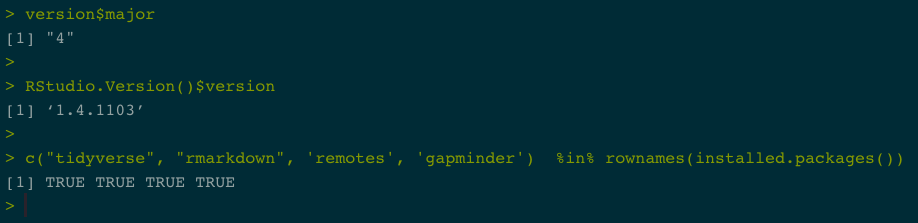

Getting all the necessary software installed, configured, and playing nicely together is half the battle when first adopting an open source, reproducable scientific workflow. These steps have become increasingly easier over the years and we are here to help you if you hit a hurdle 😄
Welcome to Geography 176A, Introduction to GIS. In this course we will use R and RStudio for data organization and manipulation, analysis, and communication/visualization. You’ll learn more about both throughout the course.
Since this class is online, you will need to use your own laptop (or to set up a free RStudio Server Account). If you can, it is preferable to have the software on your own system.
The step-by-step document will help you get R & RStudio on your own computer, along with several tools we’ll be using through out the quarter. If you have problems, you can contact me, or either of the TA’s.
Do you already have R installed?
If you have an older versions of R/RStudio installed, we recommend updating. You can check what version of R you are running by typing version in the console of RStudio.
_
platform x86_64-apple-darwin17.0
arch x86_64
os darwin17.0
system x86_64, darwin17.0
status
major 4
minor 0.1
year 2020
month 06
day 06
svn rev 78648
language R
version.string R version 4.0.1 (2020-06-06)
nickname See Things Now And you can check what version of RStudio you are running by going to “Help –> About RStudio”
If you don’t have at least R 4.0.XXX and RStudio 1.3.XXX. Proceed with this document.
Getting R and RStudio
R is a programming language and free software environment for statistical computing and graphics supported by the R Foundation for Statistical Computing. The R language is widely used for developing statistical software and data analysis. R also provides unparalleled opportunities for analyzing spatial data for spatial modeling.
RStudio is an integrated development environment (IDE) for R. Combined the R language and RStudio IDE provide the open-source, free, toolset for this course.
MacOS Install
Install R
Download the latest release (“R-version.pkg”) of R and save the .pkg file. Double-click it to open, and follow the installation instructions.
Now that R is installed, you can download and install RStudio.
Install RStudio
- Download RStudio for Mac. After downloading, double-click the file to open it, and make sure it ends up in your applications folder.
Windows Install
Install R
Download the latest R installer (.exe) for Windows. Install the downloaded file as any other windows app. Now that R is installed, you can download and install RStudio.
Now that R is installed, you can download and install RStudio.
Install RStudio
- Download the RStudio version for Windows. Run the installer (.exe file) and follow the instructions.
Launch RStudio
Once both R and RStudio are installed, you can find and click on the RStudio icon to open the program. The RStudio icon looks like this:
Opening RStudio will launch a workplace. If something like the below image appears for you, then you are all set!

We will spend the quarter working in this IDE so the layout and features will become clear as we go. A few things to note now are:
- Your session is linked to a project (pink box).
- In the blue box, you have:
- An Environment tab that shows all the active objects in your session
- A files tab that shows all the files and folders in your default (project) workplace
- A plots tab that will show all your graphs once we start visualizing data.
- In the red window you will write code and open new/existing scripts and markdown files.
- All output will be printed to your console (yellow box). Code and prompts can be directly entered in the console but will not be saved after executing.
Your layout and theme may not look like the above (all the elements are the same but arranged differently). If you want to change your theme and layout got to RStudio –> Preferences.
Here you can adjust the “Appearance” and “Pane Layout”. If you want your to look like mine, see below:


Install Packages
R comes loaded with many base packages and tools. There are also many additional tools that will make your life easier. Throughout this class, we’ll use packages that exist in the aggregate tidyverse package.
Tidyverse
The tidyverse contains a collection of very useful packages that play nicely together for data exploration, manipulation, wrangling and visualization (among other things). Packages can be installed from CRAN (Comprehensive R Archive Network) using the following pattern which should be typed in the console (yellow box):
After you press ‘Enter,’ you should see a whole bunch of text streaming across the Console Window. This is a good sign and is simply logging what’s being downloaded/installed. This process can go on for a few minutes (the tidyverse has a lot of different components). You will know it’s done when the active cursor shows up again waiting for your next command.
Once it’s installed, you can ensure that everything worked by loading/attaching the tidyverse using the library call:
When you press enter, some information will come up below the command. Don’t worry too much about it now as long as there are no error!
If you got something similar to the above you’ve successfully installed R, RStudio, and the tidyverse package. Congratulations!
Assignment
Ok, with everything you just learned your assignment is to install three new packages: rmarkdown, remotes, gapminder.
Once you do that, clear the console by clicking the broom icon () and run the following 3 lines of code:
Sys.getenv("LOGNAME")
version$major
RStudio.Version()$version
c("tidyverse", "rmarkdown", 'remotes', 'gapminder') %in% rownames(installed.packages()) For exercise 1, submit a screenshot of the output to the relevant Gauchospace dropbox. It should look like this:

The key, is to make sure the version of R is correct (4); the version of RStudio is correct (1.3.XXXX) and your packages are installed (four TRUE values).
You can close RStudio (you don’t need to “Save the Workspace” or anything else when prompted).
Nice work!
END
Prepared for Geography 176A by Daily Exercise 01